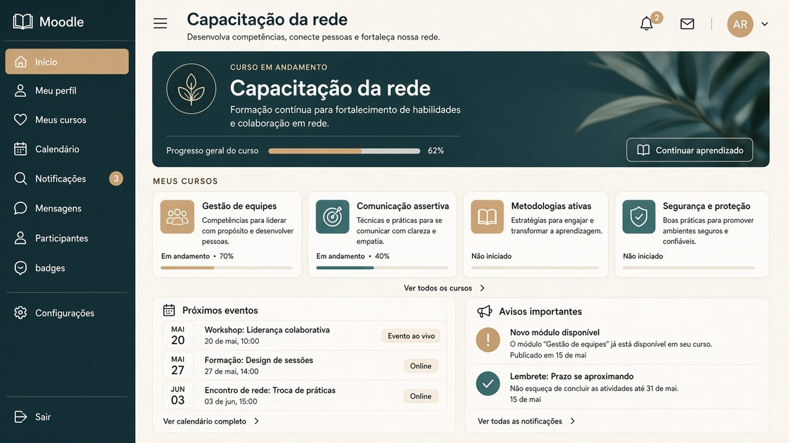
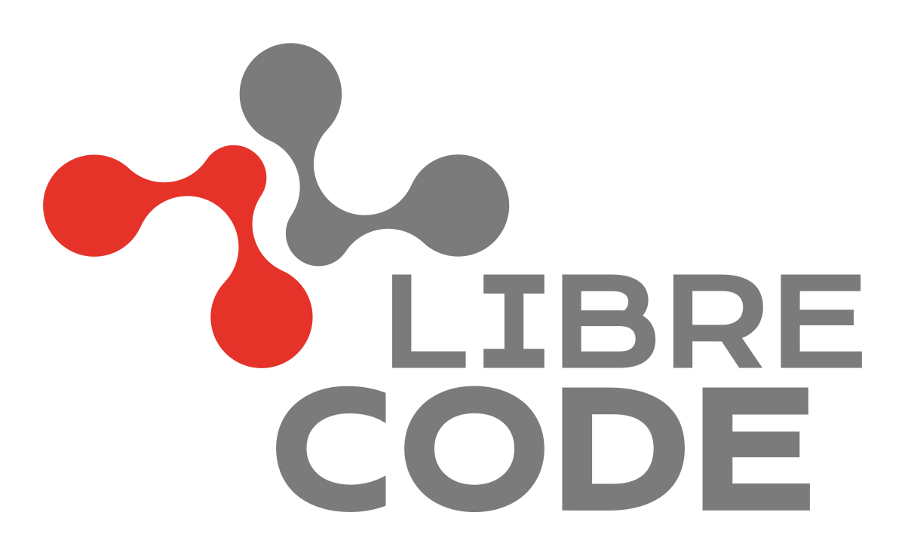

Um aluno, um cadastro
A SME enxerga a rede inteira sem pedir planilha escola por escola. O mesmo registro serve para matrícula, diário, fila e Censo.
Para secretarias municipais · Software Público · GPL v2
Menos planilha, menos retrabalho e um número confiável para matrícula, frequência, Censo e atendimento às famílias — com o histórico da rede sob controle do município.
Por que secretarias escolhem
Quando cada escola guarda o dado à sua maneira, a secretaria perde dias consolidando informação. Com o i-Educar, matrícula, frequência e documentos saem da mesma base — pronta para Censo, relatórios e atendimento ao cidadão.
A SME enxerga a rede inteira sem pedir planilha escola por escola. O mesmo registro serve para matrícula, diário, fila e Censo.
Software Público GPL v2: o município não paga licença de uso, audita o código e leva o histórico consigo se trocar de prestador.
Indicadores de matrícula, frequência e rede em tempo quase real — base para alocação de professores, vagas e prestação de contas.
Mapa da solução
O i-Educar é o sistema central da rede. Ao redor dele, o i-Diário atende o professor, a pré-matrícula organiza a fila e os módulos satélite cobrem transporte, BI e obrigações federais.
Matrícula, servidores, documentos, Educacenso e a visão gerencial da rede — o “sistema da prefeitura” no dia a dia.
Microssistema do professor: chamada, notas e planejamento na mesma base. A secretaria deixa de digitar o que já foi lançado na turma.
Pré-matrícula, transporte, relatórios avançados, gov.br, biometria e analytics — plugados sem trocar o sistema principal.
Microssistema conectado
O i-Diário é o ambiente do professor ligado ao i-Educar. Ele não cria outro cadastro: usa a turma e o aluno que a secretaria já registrou e devolve frequência e notas para a mesma base.

Capacitação da equipe
O Moodle entra como ambiente de treinamento híbrido: trilhas online por perfil (secretaria, escola e professor), com apoio presencial e salas virtuais na implantação.

Tour visual
Clique em uma tela para abrir o álbum com a explicação para gestores e os ganhos de cada ferramenta.
Demonstração
Espaço reservado para acessos de teste. Os links ainda não estão liberados ao público — quando forem publicados, gestores e equipes poderão navegar com segurança.
Para secretaria e escola conhecerem o SGE com dados de exemplo.
demo.i-educar.example /login Abrir demonstraçãoPara o professor ver chamada e notas na mesma base da rede.
diario.i-educar.example /login Abrir demonstraçãoTrilhas híbridas de treinamento da implantação.
treino.i-educar.example Abrir ambientePortal de inscrição e fila como a família vai usar.
vagas.i-educar.example Abrir portalPainéis e mapa para leitura gerencial do município.
analise.serventecassessoria.com.br Abrir analyticsRotas, mapa e portal da família em ambiente de teste.
transporte.i-educar.example Abrir móduloQuem mantém o núcleo
A Portábilis conduz a evolução do core, revisa contribuições da comunidade e mantém o software alinhado às redes públicas. Esta página é independente e compatível com esse upstream. ieducar.org · GitHub.
Amplie a operação
Para gestores: escolha o que a rede precisa agora — sem trocar o sistema principal.
Boletins e PDFs no dia a dia, com QR Code de autenticidade.
Painéis para a secretaria acompanhar a rede.
Rotas, mapa e portal da família ligados à matrícula.
Importação de arquivos do INEP com menos retrabalho.
Fila e critérios transparentes para a comunidade.
Identidade federal na porta de entrada do sistema.
Biometria facial integrada à frequência escolar.
Suporte interno, monitoramento e Gestão Presente (MEC).
Acelera calendário, perfis e estrutura pedagógica inicial.
Leitura para decidir
Para o gestor que precisa cruzar matrícula, FUNDEB, Censo e território: consultoria analítica e mapa Horizonte sobre a base do i-Educar.
Ver repositório · acesso de demonstração na seção acima (em breve).

Material de apoio
PDFs prontos para reunião com secretário, prefeito e equipe técnica.
Visão de i-Educar, i-Diário e integrações para decisão política e técnica.
Baixar PDFPassos de consultoria, migração e capacitação da rede.
Baixar PDFPanorama executivo para secretarias e gabinete.
Baixar PDFQuem leva até a sua rede
Evolução dos módulos satélite, implantação e suporte — em cooperação com a mantenedora nacional Portábilis.
Desenvolvimento dos plugins, transporte, relatórios e curadoria desta página na organização i-Educar.
Organização no GitHub
Cooperativa de software livre: hospedagem soberana, suporte e customização para o setor público.
Falar com a LibreCodePróximo passo
Implantação, migração de dados, capacitação híbrida no Moodle e evolução contínua — com o núcleo Portábilis e os módulos Buriti.